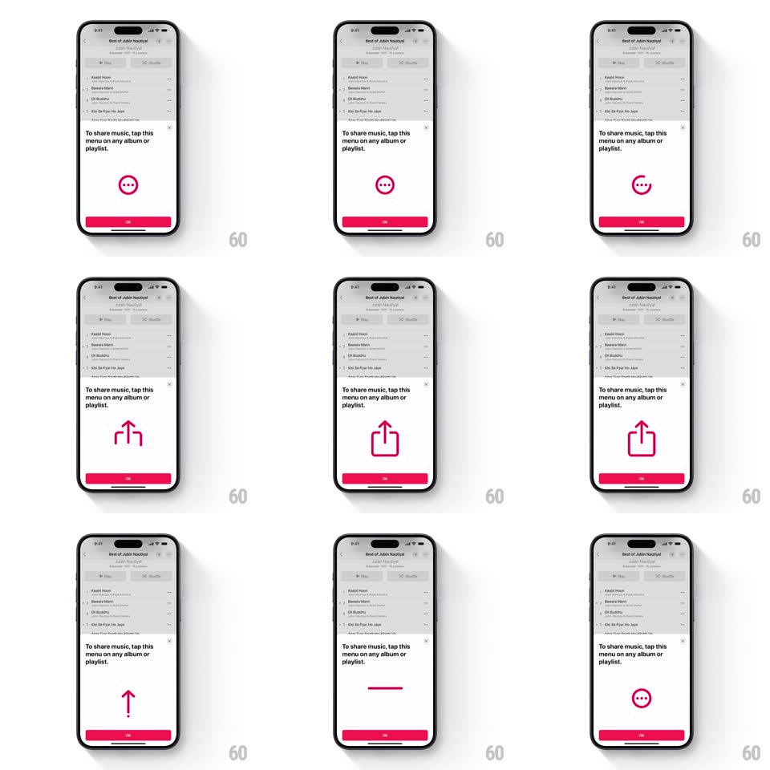

Media
Frame-by-frame

Rebuild this animation 1:1: Apple Music's share onboarding sheet - a pink icon that loops a morph between the more-options ellipsis and the share arrow above an OK button.

Rebuild this animation 1:1: Apple Music's share onboarding sheet - a pink icon that loops a morph between the more-options ellipsis and the share arrow above an OK button. ## Integration Integration: stack-agnostic spec - springs given as stiffness/damping, timed motions as duration + curve; map every value to your framework and animation library of choice. ## Scene A playlist screen dimmed behind a white bottom sheet: "To share music, tap this menu on any album or playlist." Centered below the text: a pink circular badge whose glyph morphs between the ellipsis (...) and the share icon. A full-width pink OK button pins the bottom. ## Motion spec Pattern: looping icon morph. - The sheet slides up (spring ~340/28) as the playlist dims to 45% (250ms). - The badge loops every ~2.4s: the ellipsis dots draw inward and merge into the share icon's tray line (path morph, 400ms, ease-in-out), the arrow stem rises and the arrowhead forms (stroke draw, 300ms), the badge circle contracts and releases (scale 1 to 0.92 to 1, spring ~420/22); hold the share icon 900ms, then reverse-morph back to the ellipsis. - The glyph stays pink on white throughout; the badge ring is a constant pink outline. - A small pink arrow/caret occasionally nudges from the badge toward where the real menu sits (translateY bounce 8px, 500ms, every other loop). - OK: button press dims 15% (120ms), sheet slides down and the dim lifts. ## Calibration - The morph is a true path interpolation between the two glyphs - not a flip or crossfade. - Loop pacing: 400ms morph, 900ms hold, 400ms back, 700ms rest. ## Reduced motion Static ellipsis icon; no loop. ## Don't miss - Pink is Apple Music's #FA243C; the glyph and OK share it exactly. - The morph must stay recognizable at every midpoint - keep stroke weights constant.